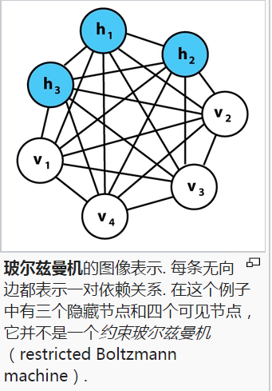

本文主要介绍RBM相关的知识。包括能量函数，概率的观点，网络的结构等等。
先来看看没有限制的波尔茨曼机是什么样子的。

原始的波尔茨曼机虽然有很多有趣的特性，但是由于连接过于复杂，很难实际应用（或者是有效的方法还没有被提出来，就像当年深度网络缺乏有效的训练方法一样）。一种限制连接形式的波尔茨曼机因为其简单的结构和有趣的性质得到了广泛的应用。看看它长什么样子。

这就是RBM，很像一个两层的全连接的神经网络。
我们用$v_i$来表示可视层的神经元,用$h_j$来表示隐藏层的神经元,用 $w_{ij}$ 来表示两层之间的权重，用 $a_i$ 来表示可视层的偏置，用 $b_j$ 表示隐藏层的偏置,用 $(v,h)$ 表示一个RBM，那么我们可以定义一些经常要使用到的量.
RBM的能量E定义为：
$$
E(v,h)=-\sum_i{a_i v_i}-\sum_j{b_j h_j}-\sum_i\sum_j{h_j w_{ij} v_i}
$$
在一般的玻尔兹曼机中，隐层和可见层之间的联合概率分布由能量函数给出:
$$
P(v,h) = \dfrac 1 Z e^{-E(v,h)}
$$
其中， $Z$ 为配分函数，定义为在节点的所有可能取值下$ e^{-E(v,h)} $的和（亦即使得概率分布和为1的归一化常数）.
类似地，可见层取值的边缘分布可通过对所有隐层配置求和得到:
$$
P(v)=\dfrac 1 {Z} \sum_h{e^{-E(v,h)}}
$$
可见层的配置v对于隐层配置h的条件概率如下:
$$
P(v|h)=\prod_{i=1}^m P(v_i|h)
$$
h对于v的条件概率为:
$$
P(h|v)=\prod_{j=1}^n P(h_j|v)
$$
单个节点的激活概率为
$$
P(h_j=1|v)=\sigma(b_j+\sum_{i=1}^m {w_{ij} v_i})
$$
$$
P(v_i=1|h)=\sigma(a_i+\sum_{j=1}^n w_{ij}h_j)
$$
式中的$\sigma$表示Logistic函数，：
$$
P(t)= \dfrac 1 {1+e^{-t}}
$$
受限玻尔兹曼机的训练目标是针对某一训练集 ${\displaystyle V}$，最大化概率的乘积。其中， ${\displaystyle V} $被视为一矩阵，每个行向量作为一个可见单元向量 ${\displaystyle v}$:
$$
\arg\max_W \prod_{v \in V} P(v)
$$
等价的，可以最大化它的对数函数：
$$
\arg\max_W \mathbb{E} \left[\sum_{v \in V} \log P (v)\right]
$$
训练受限玻尔兹曼机，即最优化权重矩阵 ${\displaystyle W}$ .
波尔茨曼机也可以看作是 马尔科夫随机场的一种特殊情况。
RBM一个基本的训练方法叫做Contrastive Divergence，它的具体过程如下：
输入： 一个N行的矩阵$x_0$，每一行对应一个可视的神经元; 隐层单元的个数m,学习率$\epsilon$, 最大训练周期T。
输出：权重$W$, 可视层的偏置$a$, 隐藏层的偏置$b$
初始化： 权重$W$,偏置$a$,$b$随机初始化为较小的数值,令可视层的第一个状态$v_1 = x_0$
参数更新规则：
$W = W + \epsilon*( P(h_1=1|v_1 )v_1^T - P(h_2=1|v_2)v_2^T))$
$a = a +\epsilon*(v_1 - v_2)$
$b = b + \epsilon*(P(h_1=1|v_1)-P(h_2=1|v_2))$
下面用Python实现其中的计算步骤，这样能够对算法的每一步有一个比较详细的了解。
1 | from __future__ import print_function |
参考文献